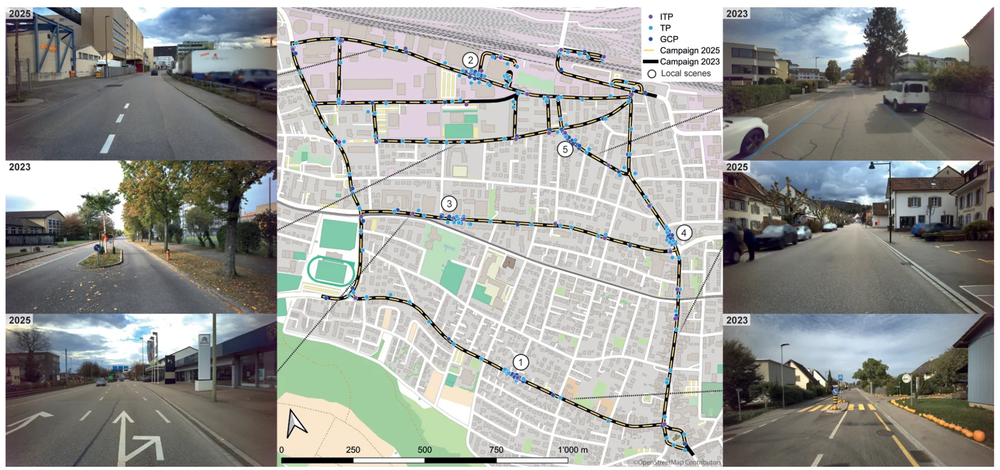
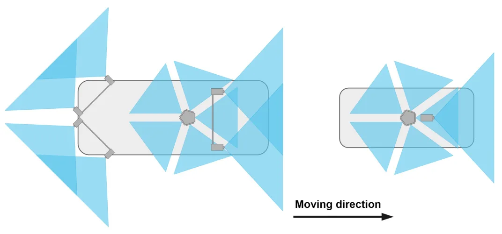
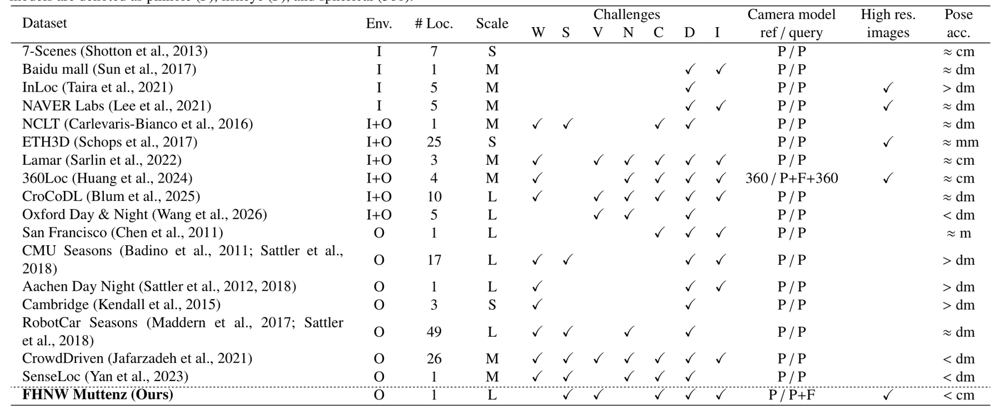
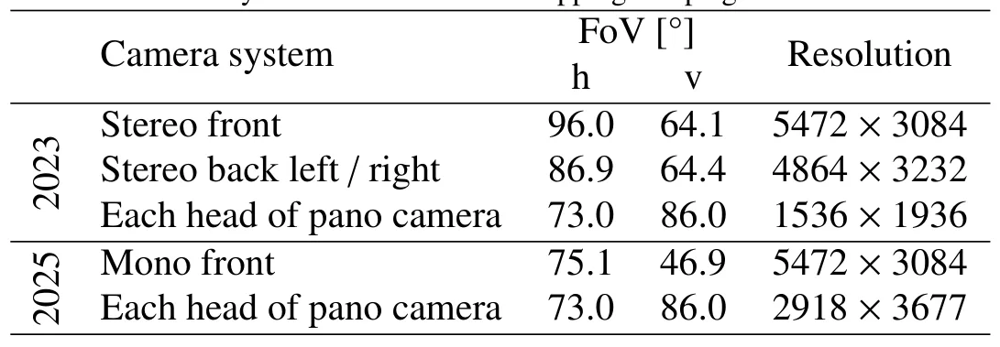
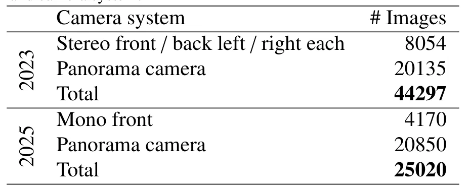

利用高端街景影像的视觉定位精度潜力Accuracy potential of visual localization exploiting high-end street-level imagery
数据集真值等级、空间规模和跨期设计都非常契合 GNSS/视觉定位；需关注误差尾部、reference density、先验依赖与不利天气/遮挡条件。
一句话工作总结
以亚厘米真值和跨期 10 km 街景数据验证视觉定位的厘米级潜力，为 GNSS 补充定位提供测量级基准。
摘要
本文系统研究 visual localization 在测量级需求下的精度潜力，并发布 FHNW Muttenz dataset：覆盖连续 10 km 街网、两次相隔约 1.5 年的 mobile mapping campaigns，包含高分辨率 reference imagery、四种 camera 的 query sequences 和亚厘米级 6-DoF ground truth。定位流程以精确地理配准街景图像为 scene representation，结合 prior-guided reference candidate selection、on-the-fly local SfM reconstruction 与 PnP pose estimation。实验得到 1–5 cm 的 median translation accuracy 和 0.05–0.1° rotation accuracy，理想条件下达到 1 cm 与 0.03°，显示视觉定位可以补充 survey-grade GNSS positioning。
Accurate and reliable pose information with respect to a reference frame is increasingly demanded across applications such as autonomous navigation, surveying, robotics, and augmented and mixed reality. Visual localization can serve as a complementary positioning modality to GNSS, whose applicability and accuracy are often limited. Yet, the accuracy potential of visual localization has not been systematically investigated against survey-grade demands. This is mainly due to the lack of publicly available, large-scale outdoor datasets with ground-truth poses in the sub-centimeter range. In this work, we address both gaps. We introduce a scalable visual localization pipeline that employs precisely georeferenced, high-resolution street-level imagery directly as the scene representation. It combines prior-guided reference candidate selection with on-the-fly local Structure-from-Motion reconstruction and PnP-based pose estimation. We further present the FHNW Muttenz dataset, a real-world dataset covering a contiguous 10 km street network mapped in two mobile mapping campaigns approximately 1.5 years apart. It consists of high-resolution reference imagery and query sequences acquired by four different cameras across five representative scenes. All images are precisely co-registered, yielding 6-DoF ground-truth poses in the sub-centimeter range. Using this dataset, we evaluate the accuracy potential of visual localization. Our experiments demonstrate median pose accuracies in the range of 1-5 cm for translation and 0.05-0.1° for rotation, reaching as low as 1 cm and 0.03° under favorable conditions. These results show that visual localization can complement survey-grade GNSS positioning, paving the way for 3D geospatial data acquisition using consumer devices and fully automated georeferencing approaches. The dataset is publicly available at: https://fhnw-muttenz-vl-dataset.github.io/.
中文解读摘录
- 作者：Jonas Meyer, Stephan Nebiker, Pascal Theiler, Norbert Haala
- 价值判断：以亚厘米 6-DoF ground truth 回答视觉定位能否接近 survey-grade demand，并发布覆盖 10 km 街网、跨约 1.5 年采集的 FHNW Muttenz dataset。
- 结果与边界：prior-guided reference selection、on-the-fly local SfM 与 PnP 获得 1–5 cm median translation 和 0.05–0.1° rotation，理想条件可到 1 cm/0.03°。后续应看跨季节、动态遮挡、参考图密度、GNSS prior 质量与 failure tail，而不只看 median。
- 链接：arXiv · PDF
图表/页面预览

{kind=link}

{kind=link}

{kind=link}

{kind=link}

{kind=link}
